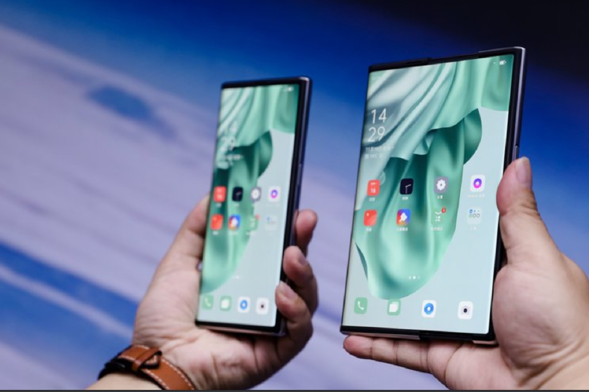
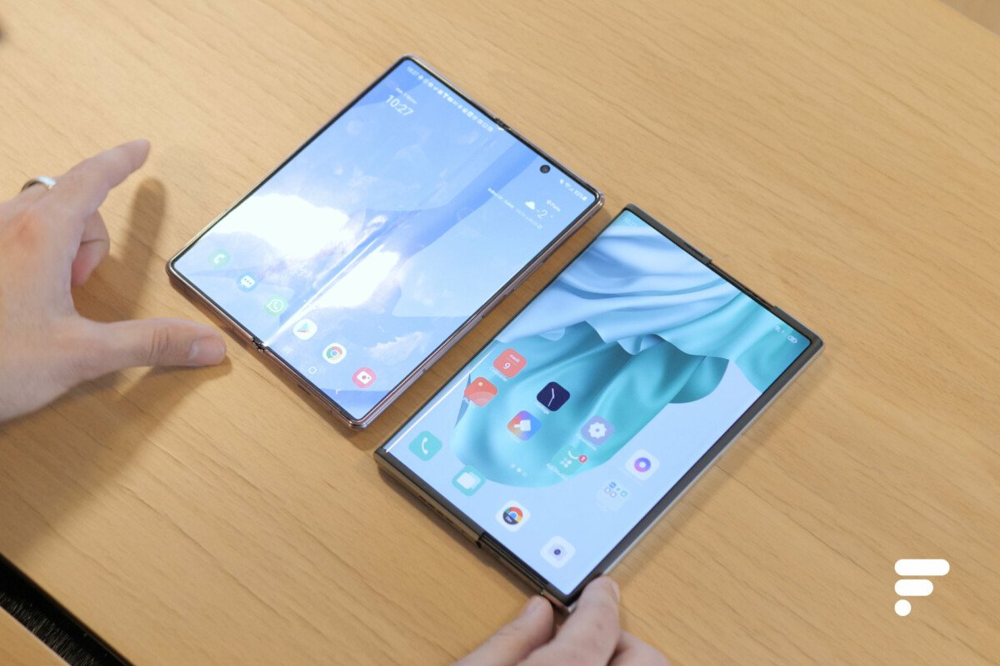

Oppo vient de dévoiler l’Oppo X 2021, un smartphone avec un écran extensible dont la diagonale peut passer de 6,7 pouces à 7,4 pouces. L’entreprise pense que ce mécanisme pourrait être plus durable que les écrans pliables.
Alors que Samsung insiste sur les smartphones pliables, Oppo passe directement aux écrans enroulables ou extensibles. Lors de son événement Inno Day 2020, la marque chinoise a donné un aperçu de ses dernières innovations technologiques, dont un smartphone avec un écran extensible.
Une alternative aux écrans pliables .
Comme avec les smartphones pliables, les écrans extensibles permettent à l’utilisateur d’avoir un appareil avec un écran plus large lorsqu’ils en ont besoin. Cependant, il n’y a pas de pli.
Dans un tweet, la marque Oppo indique d’ailleurs qu’il s’est focalisé sur les écrans enroulables justement parce qu’il n’y a pas ce pli, ce qui pourrait permettre d’avoir une meilleure durabilité.
Ci-dessous, vous avez une autre vidéo publiée par le constructeur afin de montrer le fonctionnement de cet appareil, dont le nom est Oppo X 2021.
La présentation du constructeur montre que la technologie est déjà disponible. Mais cependant, pour le moment, il ne s’agit que d’un concept phone et non d’un produit commercial. Cependant, l’Oppo X 2021 nous donne déjà une idée des technologies qui seront utilisées plus tard.
« OPPO X 2021 est le tout dernier concept de smartphone élaboré par l’équipe R&D d’OPPO en matière d’écran flexible, offrant ainsi aux utilisateurs une expérience plus intuitive. Le smartphone intègre trois technologies principales propres à OPPO, telles que le moteur d’enroulement, la plaque 2 en 1 et le laminé d’écran haute résistance Warp Track », nous indique un communiqué.
UNE CLAQUE TECHNOLOGIQUE !

Lorsqu'on saisis de l’Oppo X 2021 pour la première fois, celui-ci est au format smartphone classique. Enfin, on se dit « classique », mais il faut savoir que même sous cette apparence, l’objet est plutôt imposant avec sa diagonale de 6,7 pouces et son épaisseur conséquente. Il fait un peu penser à un Samsung Galaxy Note 20 Ultra ou à un Huawei Mate 40 Pro, mais en plus gros.La claque technologique ne tarde pas à se manifester, l’écran s'etends en sollicitant le système motorisé qui s’occupe de faire ça à notre place. Le résultat est bluffant, ni plus ni moins. La transition du format smartphone au format tablette est fluide et ne connaît pas d’accroc particulier. L’écran est passé de 6,7 à 7,4 pouces de lui-même et sans souffrir de la moindre pliure en son milieu, contrairement à ce que ce qui est souvent critiqué sur un Galaxy Z Fold 2.On n’observe aucune irrégularité lorsque la dalle s’étend, le tout est parfaitement uniforme. La prouesse n’est donc pas seulement technique, elle est aussi esthétique.
Puisque l’on parle de Samsung, sachez aussi que l’Oppo X 2021, dans sa version tablette, propose un format d’affichage plus haut mais plus étroit que le bijou de Samsung.Il faut aussi aborder la manière dont on enclenche le changement de taille de l’écran. On trouve un bouton physique sur la tranche droite de l’Oppo X 2021. Ce dernier permet de déverrouiller le smartphone de manière classique, mais c’est aussi lui qui permet de l’étendre.Pour ce faire, il faut double appuyer ou faire glisser le pouce par-dessus le renfoncement de la touche. Pour la première méthode, je n’ai rencontré aucun souci, pour la seconde… je n’y suis pas arrivé, pas une seule fois, jamais. Le responsable d’Oppo qui faisait la démonstration ne rencontrait pas de souci lui, mais je n’ai pas rencontré le même succès.
L’Oppo X 2021 étant un concept avant tout, il lui manque certaines choses. Il n’y a pas de capteur photo frontal ni de boutons pour régler le volume — il faut passer par les paramètres système pour ça.